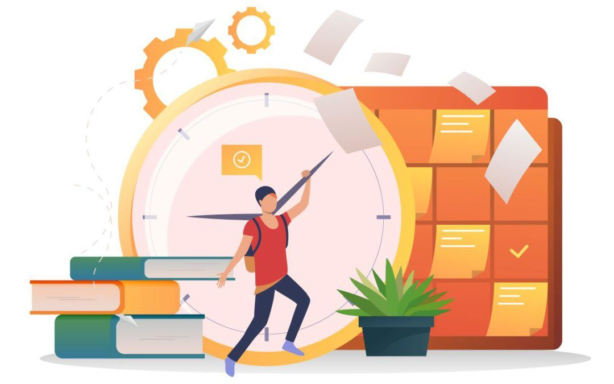
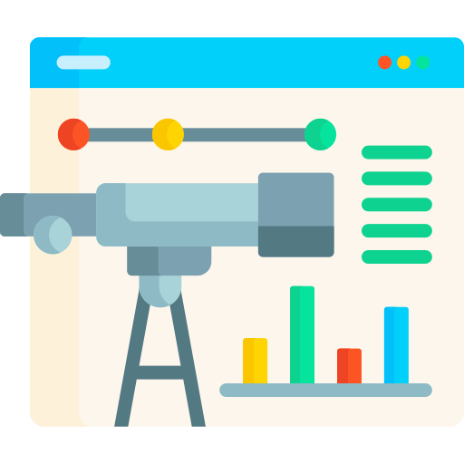

Gestión de Entregas
Clasifica tus tareas semanales según su complejidad técnica y fecha límite de entrega.
El grado superior de ASIR requiere planificación constante para organizar prácticas, redes, sistemas y scripts, evitando la saturación y mejorando el rendimiento académico general y sobre todo el aprendizaje continuo.
Ver Técnicas
Clasifica tus tareas semanales según su complejidad técnica y fecha límite de entrega.

Establece metas realistas cada mañana. No satures tu jornada con demasiados bloques densos.

Dedica un promedio recomendado de 6 horas diarias combinando teoría y práctica en entornos virtuales.

Evalúa periódicamente tu nivel de constancia para reajustar los horarios antes de los exámenes.
Gestión de sintaxis: Organizar horarios fijos para la revisión de sintaxis HTML y hojas de estilo CSS en Lenguaje de Marcas.
Asimilación rápida: Repasar los apuntes de comandos y configuración de redes inmediatamente el mismo día de clase.
Espacio Limpio:Trabajar en un espacio limpio y ordenado ayudará significativamente a la calidad del estudio.
Descanso Óptimo: Descansar adecuadamente entre temario y por las noches es fundamental para un correcto aprendizaje.